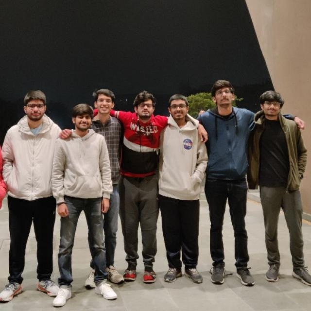
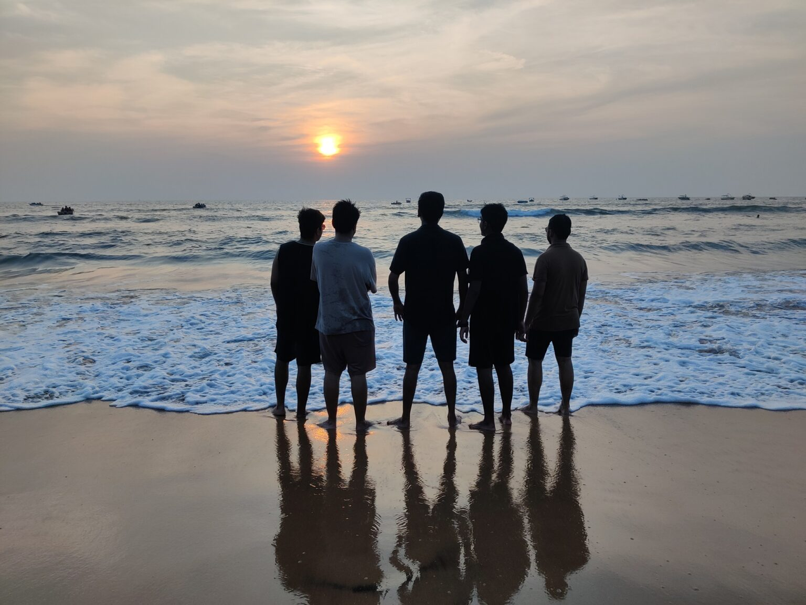
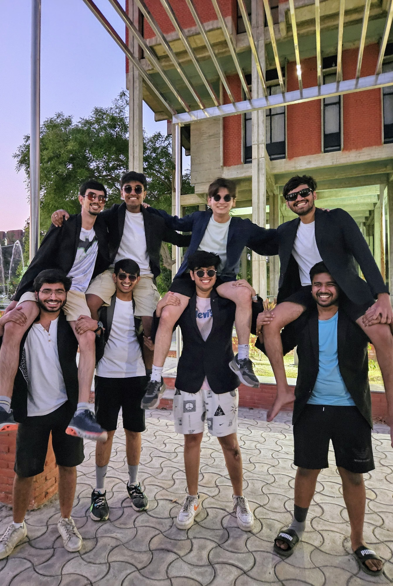
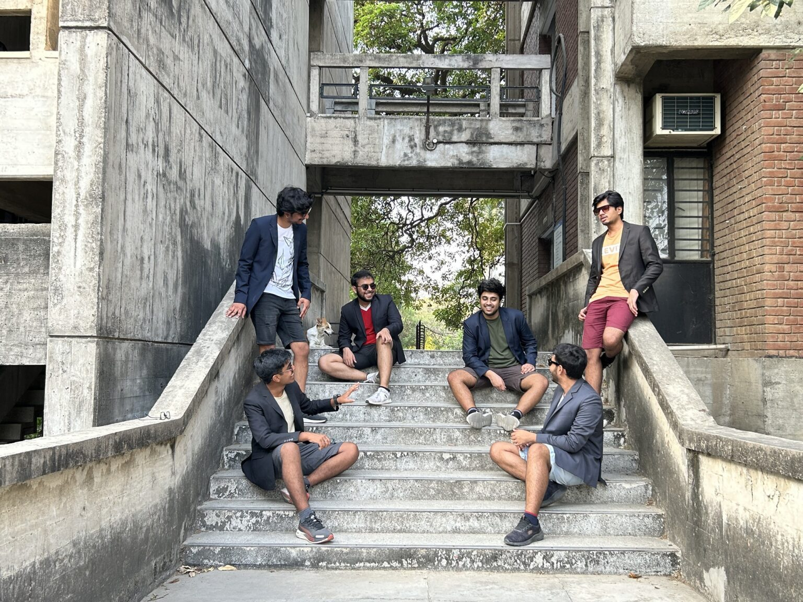
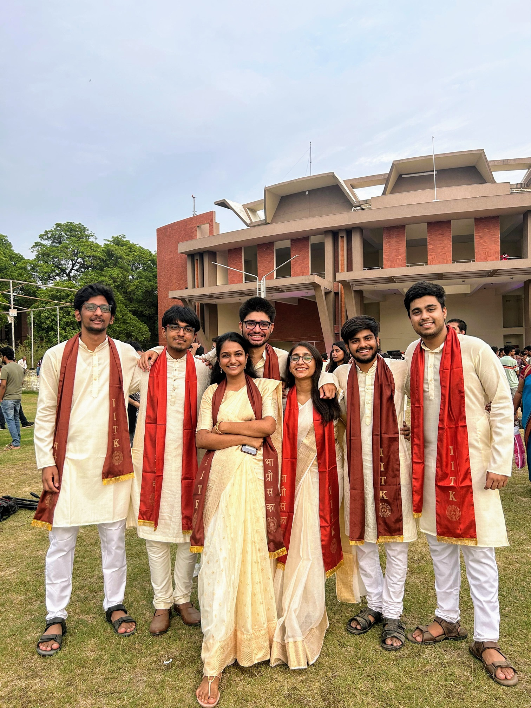

I've Left
I've just settled in my seat, the topmost corner of the middle column of L20, as I look at the TAs distributing the question paper. I grin ever so slightly, knowing that I had experienced their side of the spectrum as well. Just then, it hits me. This is my last endsem, the End-Endsem. The last time I will be sitting in L20 appearing for a paper. The last time I'll see so many heads seated with a seat's gap between them, so very clearly not wanting to be there, waiting ever so urgently for the paper to get to them and so eagerly just wanting to get over it.
"Get Over IT?" I do not want to get over it. I do not want it to finish. Do I just get up and leave immediately so that it lasts just a little while longer? I wanted that so very badly, but alas, does anyone ever have the courage? And then it hits me like a truck. I start drowning in the waves of memories that I've had over there: so many classes, so many sessions, the countless times we've just hung out over there in the middle of the night, all the bittersweet memories as well — the intern interviews, the placement tests, multiple exams wherein I sat absolutely clueless as the weird symbols on the paper made no sense. And I zone out, trying to relive them all at once. The minutes pass, and I'm at the Restaurant at the End of the Universe a million miles away. My friend sitting beside me keeps glancing at me worriedly, probably thinking that I have no clue what to write in the paper. How do I make him realize the gravity of the situation we're in? Luckily 40 minutes into the paper, a student is caught with his mobile, and the prof starts blabbering, breaking my trance. I look at the empty answer booklet lying in front of me and start writing my AWL.
Okay, just kidding. I've procrastinated over writing this so long that I'm actually ashamed of it. But if procrastination isn't the best motivation, then what is? I'd rather not say when I'm writing this, but it is surprisingly close to 4:20 am.

Sigh, I'm supposed to write my As We Leave, huh? That doesn't make any sense. Who'd want to read an article containing a thousand crying emojis? That is practically what I did as I left. So imma just call this my "I've Left" and proceed to make an attempt to express how the journey left its mark on me. I feel that I've chosen a particularly difficult topic to write about, and I'm not sure how it'll turn out, but I'll do my best.
I think anyone joining the college has enough motivation to ask around about academics, jobs and explore all the clubs of their interest, blah blah. But the college has so much more to offer — it makes you grow as a person. Think of us as Pokémon. If you're willing to accept the changes, you can evolve into whatever you want.
Now that you think that you're a Pokémon, do you think that you want to evolve? Or do you think that you are the pinnacle of mankind, that you've perfected everything there is? Do you fail to see all the people around you so clearly better in various aspects, having so much to offer to learn from? If you don't, I'm afraid you are a really poor judge of human nature, and I will strongly recommend you read all of Hercule Poirot and Miss Marple in chronological order, or perhaps go experience a canon-event (you know what I mean, and no, I will not talk any further on this) that actually gives you a reality check.
It will become quite abstract if I beat around the bush, so I'd rather just tell what effect this journey had on me and will hope that you guys can get what I mean. As all the great pieces of art seem to have a non-linear plot, I will as well have to go back in time.
"Where are you from?" has been a million-dollar question for me. I have been nomadic and have been shifting from one place to another all my life. Fun, isn't it? Perhaps so. Maybe not.
Where do I call myself from?
Do I say Rajasthan because somewhere in Rajasthan lies the family roots, where I have never been and don't even remember the name? Or do I say Kolkata because I was born there and stayed there for five years, but I know no Bengali and don't recall almost anything (thank you, infantile amnesia!)? Maybe Indonesia, where I spent most of my childhood and did practically all my schooling, but have since forgotten the language and am out of touch with most of the people I knew over there? Or do I call myself from Karnataka because of the couple of years I spent over there (no offense, but no)? Maybe I'm from Kota, where I felt "at home" with the people over there for the first time in a long time, and had as much fun as one could while preparing for JEE :/. Or do I call myself from Kanpur because I did my college from there (but Kanpur city? Seriously?)?
A friend of mine rightly revealed to me that I suffer from an identity crisis. Since I myself don't know where I belong, and telling all this is a long story, I just reply, "Long story," and cut the conversation short.
Not very surprisingly, my outlook towards life became like a series of Rick and Morty adventures stitched together — largely independent adventures with maybe a few callbacks to the previous "episodes." I would never put in effort to get to know people, with the mindset that they're somewhat "side-quests," since they'll only be a part of this adventure and be gone when I move to the next one. I've seen a fairly decent number of kids who actually have this mindset. Mind you, this isn't very evident, and it's not like I knew this all along. I realized this amidst one of the sad, silent retrospectives when we'd started leaving campus.
Anyways, even without my negative connotations, you should've realized that this isn't exactly an ideal outlook. You miss out on so much stuff that you don't realize — basically like speedrunning GTA V by completing all the main quests, and then you feel empty and disappointed after seeing 70% game completion having killed Trevor.
You get to learn so much from the people around you. You might not know who you are or what you want to be when you enter college, but you can definitely have a pretty good idea of the person you'd want to be by incorporating all the W traits you find in the people around you. That person who taught you to not think twice and live life to the fullest. That person whose way of talking you absolutely adore. That person who has a pretty similar sense of humor, and you have a blast with them. That person who has a pretty dissimilar sense of humor, and you find out that that's pretty humorous as well. That person who is so easy to have around just for who they are, and you try to pick up cues as to why that is. That person who makes you realize that life isn't all sunshine and rainbows and that you need to give hate where hate is due. That person, who you met really late, who made you realize how much fun you used to have in that hobby of yours you'd given up. That person, after talking to whom you realize how much impact one-on-one conversations can and should have. That absolutely fun person to have around who overdoes it in group settings just to try and become part of one. Obviously, not all the stuff you'll see will be a W — you'll find a lot of L stuff as well.

The parting speech the professor gave in my last UG class was absolutely beautiful. She said that we as a generation have become so cynical that being cynical is considered cool. I couldn't agree more (definitely do a course under Suchitra Ma'am!). We're so quick to judge and find faults with the people around us that we usually don't give them enough credit for who they are. You'll probably make a very big list of the L stuff you see around you, but do try to keep an open outlook and have some sort of "utopian vision." At any rate, as long as you're able to categorize what you think is W and what's L, you should be good. It doesn't matter all that much how you do that, as long as you do. One could argue that Walter White became Heisenberg because he got diagnosed with cancer, or one could claim that cancer just surfaced Heisenberg out of Walter. Potato, potahto.
So maybe the next time someone asks me "Where are you from?" I'll just say "IITK," because it has given me so much that I'll carry a part of the people I've known forever with me. Should I have to care that the person asking does not take me for an arrogant and boastful guy who got into IIT? Little would they know the significance it has had in my life.



Sigh, this might sound very complicated, but it isn't. You don't have to actively put in effort all the time. If you're open to learning and hearing people out, this wouldn't be as daunting as it seems.
At any rate, the best one-liner advice I could give is to not restrict yourself a lot and be open to all the new experiences. This is the best time. As Calvin rightly said, "There's never enough time to do all the nothing you want," or perhaps, as John Wick said, "Yeah."
Speaking of John Wick, I will say that I have rambled on quite a lot as compared to monosyllabic responses. This is currently at 1,688 words and an 8 minute 26 second reading time (reference: niram.org/read), which is a lot more than what I thought it would be, and definitely a lot more than most of your attention spans — maybe I should thank you if you've made it till here.
Anyways, imma head back to my TV now. As I head back towards the sofa after putting on Rick and Morty, I glance at The Lord of the Rings lying on the table beside it, wherein Merry and Pippin desperately beg for me to revive a fraction of my old reading habit and come rescue them. I slump back into the sofa, watch Rick and Morty for exactly 2 minutes and 17 seconds before taking out my phone and scrolling reels, sincerely hoping that this text touches at least a few of you.
Adios, mon ami!
P.S. — There are a lot of easter eggs about all the books/series/movies I love; let me know if you're able to identify all of them, otherwise don't bother, you suck.